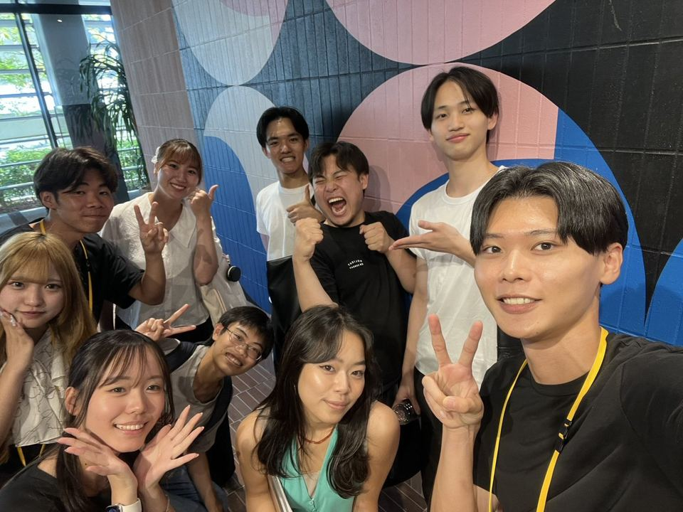

「面談はまだ少し早いかも」という方へ
気になることを、現役メンバーに聞けます。
RVSS質問会では、現役メンバーにZoomで20分、何でも質問できます。

質問会で聞けること
- 普段どんな活動をしているのか
- メンバーはRVSSをどう活用しているのか
- どんな学生が参加しているのか
- 就活、何から始めればいい？
- やりたいことがまだ見つからない
聞きたいことをひとつ考えておくと、当日がスムーズです。
申し込んだあとの流れ
- 下で日時を選んで申し込む
- すぐにLINEで、確認のメッセージとZoomのURLが届きます
- 前日の20時ごろと開始2時間前にも、LINEでお知らせします
- 当日はZoomで20分
ご希望の日時を選んでください
日程を読み込んでいます。
少々お待ちください。
少々お待ちください。
いまお選びいただける時間がありません。時間をおいて開き直してください。
お名前は、LINEの表示名で受け付けます。
日程を変えたいときは、公式LINEへご連絡ください。
RVSS質問会（Zoom・20分）
お申し込みを受け付けました
確認のメッセージをLINEでお送りします。
前日の20時ごろと開始2時間前にも、LINEでお知らせします。